Temas
- 1. Aspectos Generales de la Ciencia Jurídica
- 2. Estructura Constitucional
- 3. Hechos y Actos Jurídicos
- 4. Contratos
- 5. Propiedad Intelectual
Aspectos Generales de la Ciencia Jurídica
Primera Clase: en ella veremos el concepto de derecho, la diferencia entre derecho objetivo y subjetivo, las fuentes del derecho y las distintas divisiones, que desde el punto de vista académico se han intentado
Derecho Concepto
- Conjunto Organizado de Normas
- Emanadas de un poder estatal competente
- Percibidas por la población como obligatorias
El derecho es un concepto complejo y discutido, con distintas definiciones según la filosofía adoptada. Puede verse como un conjunto de normas justas, como un sistema de sanciones, o como una construcción social. Estas definiciones muchas veces reflejan posturas morales o filosóficas y no siempre ayudan a entender un sistema jurídico concreto.
Para evitar confusiones, se puede definir al ordenamiento jurídico como:
“El conjunto organizado de normas, creadas por un poder estatal competente, y percibidas como obligatorias por la sociedad.”
Esta definición incluye tres aspectos clave:
- Organización: Las normas tienen jerarquías que permiten resolver conflictos legales.
- Origen estatal: Las normas provienen del Estado o son reconocidas por él.
- Obligatoriedad y sanción: El Estado impone las normas y castiga su incumplimiento, evitando la justicia por mano propia.
En resumen, el derecho regula la conducta social mediante normas impuestas y garantizadas por el Estado.
Derecho Objetivo (Divisiones)
Derecho de Fondo y Forma
Derecho Publico y Privado
- Derecho Publico:
- Derecho Penal
- Derecho Administrativo
- Derecho Constitucional
- Derecho Privado
- Derecho Civil
- Derecho Comercial
- Derecho Laboral
Derecho Objetivo y Subjetivo
La palabra derecho tiene dos sentidos:
- Derecho objetivo: es el conjunto de normas generales y vigentes en un país.
- Derecho subjetivo: es la facultad individual de exigir algo a otro conforme a esas normas.
Ambos est√°n relacionados: el derecho subjetivo surge del objetivo y lo aplica a situaciones concretas.
Respecto a su naturaleza, las teorías clásicas dicen que el derecho subjetivo es una expresión de la voluntad reconocida legalmente. Sin embargo, esta visión fue criticada por permitir abusos. Von Ihering propuso que es un “interés jurídicamente protegido”, dando origen a la doctrina del abuso del derecho.
Desde una postura distinta, Kelsen negó la existencia de derechos subjetivos como tales: para él, solo existen obligaciones impuestas por la norma.
A pesar del debate teórico, el derecho subjetivo cumple funciones prácticas clave, especialmente en el derecho procesal, al definir quién puede reclamar un derecho (legitimación activa).
El derecho objetivo: Sus divisiones
Aunque el orden jurídico es un solo sistema, para su estudio se lo divide en ramas, estas divisiones son arbitrarias y muchas veces se combinan en la práctica. Las principales clasificaciones son:
A. Derecho de fondo y de forma:
- Derecho de fondo o sustancial: define derechos y relaciones entre personas.
- Derecho de forma o procesal: regula cómo se resuelven disputas ante una autoridad.
- En Argentina, la Nación legisla el fondo, y las provincias la forma.
B. Derecho p√∫blico y privado:
Derecho P√∫blico:
Regula las funciones del Estado como poder p√∫blico. No se basa en relaciones de igualdad. Incluye:
- Derecho Constitucional: analiza la estructura del poder estatal y la interpretación de la Constitución.
- Derecho Penal: establece delitos y sanciones.
- Derecho Internacional P√∫blico: rige las relaciones entre Estados.
- Derecho Administrativo: regula el funcionamiento de la administración pública.
Derecho Privado:
Regula relaciones entre particulares en igualdad. Protege principalmente intereses económicos. Pero hoy día incorpora elementos públicos para evitar abusos (por ejemplo, proteger al consumidor o al trabajador). Incluye:
- Derecho Civil: regula relaciones entre personas como la familia, propiedad, contratos y derechos personalísimos. Es la rama más antigua.
- Derecho Comercial: regula empresas y actos de comercio.
- Derecho Laboral: regula el trabajo. Aunque nació del derecho civil, tiene fuerte intervención estatal, por lo que se considera una rama mixta entre lo público y lo privado.
Fuentes del derecho
El término “fuentes del derecho” puede tener varios sentidos:
- Filosófico: ideas o valores que inspiran la ley (ej. Dios como fuente de justicia).
- Histórico: antecedentes políticos o sociales que influyen en la creación de normas (ej. pactos preexistentes).
- Jurídico (principal): mecanismos que originan normas con derechos y obligaciones.
üèõÔ∏è 2. La Ley
Es la fuente principal del derecho en sistemas romanistas (como el argentino).
- Formalmente: norma emanada del Congreso según la Constitución.
- Materialmente: norma emitida por cualquier autoridad competente (leyes, decretos, resoluciones, edictos, etc.).
Se pueden clasificar:
-
Por contenido: Autónomas (completas, se entienden por sí solas.) y No autónomas (dependen de otras normas. Ej.: definiciones, normas explicativas, modificativas.)
-
Por estructura: Rígidas (de aplicación directa y clara (ej. mayoría de edad).). Flexibles: (abiertas a interpretación judicial (ej. “buen padre de familia”).)
-
Por relación con la voluntad de las partes: Imperativas: (obligatorias, no se pueden modificar por acuerdo privado.) Supletorias: (se aplican si las partes no acuerdan lo contrario.)
üåÄ 3. La Costumbre
Es una pr√°ctica repetida (elemento material) que se considera obligatoria (elemento subjetivo).
No es cualquier hábito social, sino una conducta aceptada como norma jurídica.
- Antes era la fuente principal del derecho.
- Luego se subordinó a la ley escrita.
- Desde 1968, en Argentina, tiene valor legal cuando la ley guarda silencio, pero no puede oponerse a ella.
⚖️ 4. La Jurisprudencia
Son los fallos judiciales que sirven de guía para resolver casos similares. Un solo fallo puede formar jurisprudencia (Leading Case).
- Aunque aplica solo a las partes del caso, influye en la interpretación general de la ley.
- Según el realismo jurídico, “la ley es lo que el juez dice que es.”
- Los jueces crean derecho cuando interpretan la ley en función de los cambios sociales o resuelven situaciones no previstas (lagunas legales).
- Así, la jurisprudencia orienta a otros operadores del derecho.
Efectos de la ley con relación al tiempo
-
¬øCu√°ndo empieza a aplicarse una ley?
Una ley comienza a ser obligatoria después de ser publicada en el Boletín Oficial.
Si no se indica otra fecha, entra en vigencia 8 días después de su publicación.
Aunque no todos leen el Boletín Oficial, legalmente se supone que todos conocen la ley desde su publicación (esto se llama "ficción jurídica"). -
¬øPuede una ley aplicarse hacia el pasado (retroactivamente)?
Por regla general, no. Las leyes nuevas se aplican desde su entrada en vigencia hacia adelante.
Una ley es retroactiva si afecta situaciones pasadas, como cambiar condiciones de un contrato ya firmado.
Desde 1968, se acepta que las leyes pueden ser retroactivas, pero con límites:- No pueden afectar derechos protegidos por la Constitución.
- No se aplican retroactivamente a contratos en curso si la norma nueva es supletoria (es decir, si las partes podían modificarla por acuerdo).
- Si la norma es imperativa (obligatoria), sí puede aplicarse a relaciones ya existentes.
-
¿Qué pasa si hay conflicto con derechos constitucionales?
Las leyes, incluso las retroactivas, no pueden violar derechos constitucionales.
Sin embargo, estos derechos pueden ser regulados, siempre que no se vacíen de contenido (por ejemplo, en situaciones de emergencia económica).
Elementos de las relaciones jurídicas
Toda relación jurídica se compone de tres elementos fundamentales: sujetos, causa y objeto.
Los sujetos son las personas que participan en la relación. Pueden ser personas físicas o jurídicas (como empresas). Las partes son quienes asumen derechos u obligaciones, ya sea directamente o mediante representantes. También se consideran partes a los herederos, salvo si el contrato dependía de cualidades personales del fallecido, si se pactó que terminaba con la muerte, o si el heredero aceptó con beneficio de inventario. Por otro lado, los terceros son quienes no participaron del acto y, en general, no se ven afectados por él, salvo excepciones como los derechos reales.
La causa es el fin concreto que cada parte busca al celebrar un contrato. No hay que confundirla con los motivos personales. Por ejemplo, en una compraventa, la causa es entregar el bien a cambio del precio. Si la causa es inexistente, ilegal o falsa, el acto puede ser nulo. Aun así, si una causa falsa encubre una válida, el acto puede seguir siendo válido.
El objeto es la prestación que se debe cumplir. Debe ser posible, lícito y moralmente aceptable. Si no cumple estos requisitos, el acto puede anularse en su totalidad o en parte, según la importancia del objeto dentro del contrato.
Evaluaciones
Bancos de Datos
1- ¿Cuál de los siguientes datos NO se encuentra dentro del ámbito de aplicación de la ley de Bancos de Datos?
- Los datos médicos
- Los datos de identidad mínimos de una persona
- Los datos estadísticos
Respuesta
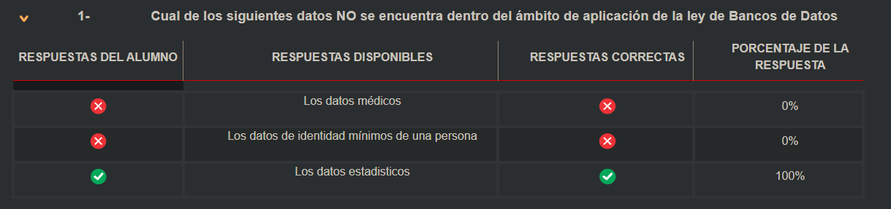
✅ Los datos estadísticos
Seg√∫n lo establecido en la Ley 25.326:
Los datos disociados, como los estadísticos, no permiten identificar al titular, ya que fueron tratados para hacer imposible su vinculación con una persona determinada. Por ello, no se consideran datos personales y están excluidos del ámbito de aplicación de la ley.
En cambio:
- Los datos médicos son datos sensibles y están expresamente regulados por la ley.
- Los datos de identidad mínimos (nombre, domicilio, DNI, etc.) son datos personales de acceso público, también incluidos en la ley.
2- La obligación de recabar los datos personales previa autorización de su titular, está vinculada a qué principio
- La licitud y buena fe
- La Confidencialidad
- La calidad de los datos
Respuesta

‚úÖ La licitud y buena fe
De acuerdo con la Ley 25.326 y el art. 4.2 establece el:
"principio de licitud y lealtad en el tratamiento de datos personales", indicando que la recolección no puede hacerse por medios desleales o sin consentimiento expreso e informado del titular.
Este principio exige que el tratamiento de los datos sea legal y transparente, y que el consentimiento informado sea condición necesaria para la recolección de datos personales.
Las otras opciones:
- Confidencialidad → se refiere a la obligación de guardar secreto sobre los datos recolectados (art. 10).
- Calidad de los datos ‚Üí se refiere a que los datos deben ser veraces, actualizados y pertinentes (art. 4.4).
3- ¬øCu√°l es el sistema de la ley de bancos de datos respecto a la responsabilidad administrativa?
- No dice nada
- Establece cuáles son las sanciones y delega en la autoridad de aplicación definir cuáles son las conductas prohibidas
- Establece las conductas prohibidas y sus respectivas sanciones
Respuesta

‚ùå ESTA NO Establece las conductas prohibidas y sus respectivas sanciones
La Ley 25.326 no se limita solo a sancionar, sino que define claramente las conductas prohibidas (como la recolección de datos sensibles sin consentimiento, uso indebido, falta de inscripción del banco, cesión sin autorización, etc.) y establece el régimen sancionatorio correspondiente.
Adem√°s:
- El artículo 32 modifica el Código Penal, incorporando el art. 157 bis, que penaliza la revelación indebida de datos cuando hay obligación de confidencialidad.
- También se detallan infracciones administrativas y sus sanciones (multas, clausura, etc.) a través de la autoridad de aplicación.
Por lo tanto, no se delega totalmente en la autoridad, sino que la ley ya establece un marco normativo claro.
En la autoevaluación estaba mal
✅ Establece cuáles son las sanciones y delega en la autoridad de aplicación definir cuáles son las conductas prohibidas
Esto significa que, aunque la ley establece el régimen sancionatorio, las conductas prohibidas no están todas específicamente detalladas en el texto de la ley, sino que se delegan parcialmente en la autoridad de aplicación (la Agencia de Acceso a la Información Pública en Argentina) para su reglamentación o interpretación.
Mi error fue asumir que todas las conductas prohibidas estaban claramente definidas en la ley, cuando en realidad muchas quedan sujetas a regulación administrativa posterior.
4- Los datos sensibles
- Están fuera del ámbito de aplicación de la ley
- Pueden ser tratados siempre que exista un consentimiento informado del titular de los datos
- Salvo excepciones no pueden ser recogidos ni tratados
Respuesta
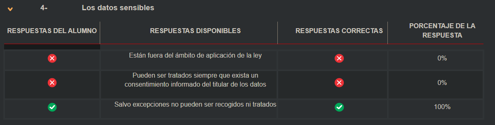
‚úÖ Salvo excepciones no pueden ser recogidos ni tratados
La Ley 25.326 establece en el artículo 7.2 que:
"Queda prohibida la formación de archivos, registros o bancos de datos que almacenen información que revele directa o indirectamente datos sensibles, salvo en los casos expresamente autorizados por la ley."
Los datos sensibles (como salud, vida sexual, origen étnico, religión, opiniones políticas, etc.) solo pueden ser tratados en casos excepcionales, como:
- Fines estadísticos y disociados
- Instituciones como iglesias o sindicatos, respecto de sus miembros
- Profesionales de la salud, en el marco de su actividad
- Razones de interés público debidamente justificadas
Por tanto, su tratamiento está prohibido de forma general y solo se permite en supuestos muy específicos.
5- ¿Cuál de las siguientes hipótesis es una excepción a la obligación de autorización para recabar los datos?
- La contratación de un servicio que necesite acceder a estos datos para ser cumplido
- La renuncia anticipada del titular de los datos
- Que la conducta del titular de los datos permite inferir que autoriza la recolección
Respuesta
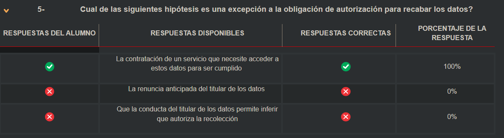
✅ La contratación de un servicio que necesite acceder a estos datos para ser cumplido
Según la Ley 25.326, artículo 5, existen excepciones a la obligación de contar con consentimiento previo para la recolección de datos. Una de ellas es:
“Cuando los datos se recaben en el ejercicio de funciones propias de los poderes del Estado o en virtud de una obligación legal o contractual del titular de los datos.”
Esto incluye los casos contractuales, como cuando alguien contrata un servicio y es necesario acceder a ciertos datos personales para cumplir con ese contrato (por ejemplo, nombre, dirección para entrega, etc.).
Las otras opciones son incorrectas porque:
- La renuncia anticipada del titular no est√° prevista por la ley y no suprime sus derechos.
- Inferir consentimiento por conducta est√° prohibido: el consentimiento debe ser libre, expreso y por escrito.
Aspectos Generales de la Ciencia Jurídica
Primera Clase: en ella veremos el concepto de derecho, la diferencia entre derecho objetivo y subjetivo, las fuentes del derecho y las distintas divisiones, que desde el punto de vista académico se han intentado
1- La ciencia jurídica comprende el conjunto organizado de normas emanadas por un órgano competente
- Verdadero
- Falso
Respuesta

‚úÖ Verdadero ESTO ES MAS FALSO QUE LA MIERDA PERO BUENO
“el conjunto organizado de normas emanadas de un poder estatal competente, las cuales son percibidas por la población como obligatorias.”
Esa es justamente la definición que adopta la ciencia jurídica para estudiar el derecho objetivo dentro de un sistema legal específico (como el argentino), por lo tanto la afirmación es verdadera.
2- El derecho real establece una relación entre dos personas
- Verdadero
- Falso
Respuesta

‚úÖ Falso
El derecho real no establece una relación entre dos personas, sino una relación directa entre una persona y una cosa (por ejemplo, la propiedad sobre un bien). Es un derecho que se ejerce erga omnes (frente a todos), y no entre partes específicas como sucede en los derechos personales u obligaciones.
Esto se diferencia de los derechos personales, que sí implican una relación entre personas, como un contrato donde una parte exige algo a otra.
3- El ejercicio de un derecho subjetivo siempre es lícito
- Verdadero
- Falso
Respuesta
El derecho subjetivo es la facultad que tiene una persona para exigir algo conforme a la ley. Surge del derecho objetivo y permite hacer valer un interés propio protegido jurídicamente.
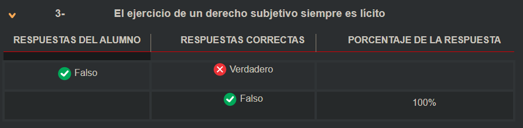
‚úÖ Falso
El ejercicio de un derecho subjetivo no siempre es lícito. Aunque el derecho reconoce ciertas facultades, su ejercicio está limitado por el principio de no abuso del derecho.
Como vimos en el texto, si una persona ejerce un derecho en forma abusiva, más allá de los fines legítimos para los cuales fue otorgado, puede incurrir en responsabilidad.
➡️ Esta doctrina se consolidó con la idea de que los derechos no se ejercen en abstracto, sino en función de intereses jurídicamente tutelados.
COMO MIERDA ABUSAS DE UN DERECHO QUE MIERDA ESTA PASANDOOOOOOOOOOOOOOOOOOOOOOOOOOOOOOOOOOOOOOOOOOOOO ODIO ESTA MATERIA PROGRE
4- Cuando analizamos las fuentes del derecho, el decreto reglamentario de la ley de promoción de software es ley en sentido material pero no formal
- Verdadero
- Falso
Respuesta
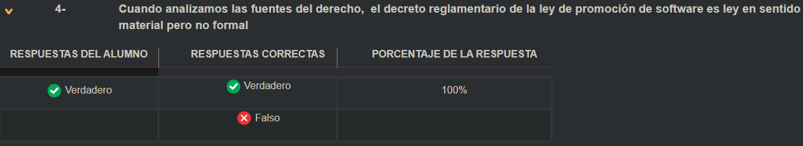
‚úÖ Verdadero
En el marco de las fuentes del derecho, una norma tiene valor de ley en sentido material cuando establece reglas generales y obligatorias, sin importar qué órgano la haya dictado.
El decreto reglamentario de la ley de promoción de software es dictado por el Poder Ejecutivo, y si bien no es una ley formal (porque no proviene del Congreso), sí lo es en sentido material ya que tiene contenido normativo obligatorio.
Este concepto est√° claramente explicado en el material cuando se diferencia entre:
- Ley formal: emanada del Congreso.
- Ley material: cualquier norma obligatoria dictada por autoridad competente.
5- El objeto de normas supletorias son obligatorias si las partes guardan silencio al momento del contrato, pero pueden apartarse de lo previsto si así lo desean
- Verdadero
- Falso
Respuesta
Las normas supletorias son reglas legales que se aplican solo si las partes no acuerdan otra cosa. Se pueden modificar por voluntad de las partes.

‚úÖ Verdadero
Las normas supletorias son aquellas que se aplican autom√°ticamente si las partes no acuerdan otra cosa en un contrato. Como dice tu material:
"El acuerdo de voluntades se compone por lo que las partes expresamente acordaron m√°s lo que la ley marca en caso de silencio."
Sin embargo, estas normas pueden ser dejadas de lado si las partes lo deciden expresamente, ya que no son imperativas. Es decir, son obligatorias solo si no se pacta lo contrario, y pueden ser sustituidas por la voluntad de las partes.
Estructura Constitucional
En esta unidad repasaremos algunos conceptos de derecho constitucional, en particular, la forma del estado y del gobierno y los límites que el derecho le impone al poder estatal.
1- El habeas corpus es
- Un derecho constitucional contra las detenciones arbitrarias
- Una garantía que protege la libertad ambulatoria
- Una declaración de derechos humanos
Respuesta
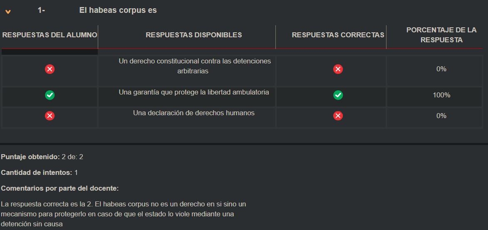
✅ Una garantía que protege la libertad ambulatoria
Según el texto que me compartiste, el habeas corpus es una garantía constitucional que tutela la libertad física o ambulatoria de una persona frente a detenciones o restricciones arbitrarias. Si bien puede considerarse un derecho constitucional, en sentido técnico y preciso es una garantía, es decir, un mecanismo procesal que permite proteger ese derecho.
2- Aparte del pre√°mbulo el texto constitucional se divide en:
- Dos partes: Declaraciones derechos y garantías y autoridades de la nación
- Tres partes: Declaraciones derechos y garantías, autoridades de la nación y gobiernos provinciales
- Cuatro partes: Declaraciones derechos y garantías y tres correspondiendo a cada poder del estado
Respuesta

✅ Dos partes: Declaraciones derechos y garantías y autoridades de la nación
Según el desarrollo teórico, el texto constitucional argentino —aparte del preámbulo— se divide en dos grandes secciones:
- Parte dogmática: que contiene las declaraciones, derechos y garantías.
- Parte orgánica: que regula la organización y funcionamiento de los poderes del Estado (autoridades de la Nación).
3- La monarquía es una forma
- De nación
- De estado
- De gobierno
Respuesta
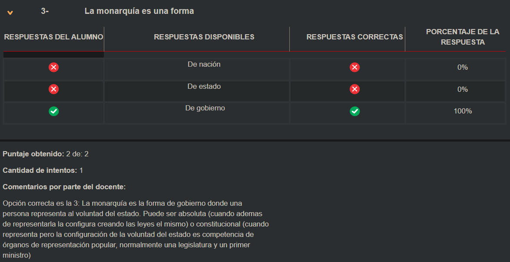
‚úÖ De gobierno
Según el texto que compartiste, la monarquía se clasifica dentro de las formas de gobierno, ya que se refiere al modo en que se ejerce el poder sobre la población. Se contrapone a la república, y puede ser constitucional o absoluta, dependiendo del grado de poder del monarca.
4- La existencia del federalismo se relaciona
- Con la preexistencia de los gobiernos locales, que retienen para sí las competencias no expresamente delegadas
- La mayor descentralización de las facultades del estado en beneficio de los gobiernos locales
- La existencia de provincias en un territorio
Respuesta

✅ Con la preexistencia de los gobiernos locales, que retienen para sí las competencias no expresamente delegadas
Según el texto, el federalismo argentino se basa en que las provincias son preexistentes a la Nación y, por lo tanto, toda facultad no delegada permanece en ellas, lo que implica una distribución de competencias en favor de los gobiernos locales. Esto es lo que distingue al federalismo de otras formas de organización estatal.
5- Un sistema de control constitucional difuso implica
- Que cualquier juez puede declarar la inconstitucionalidad
- Que la declaración se expande a los casos similares
- Que tanto el poder ejecutivo como el judicial puede declararla
Respuesta
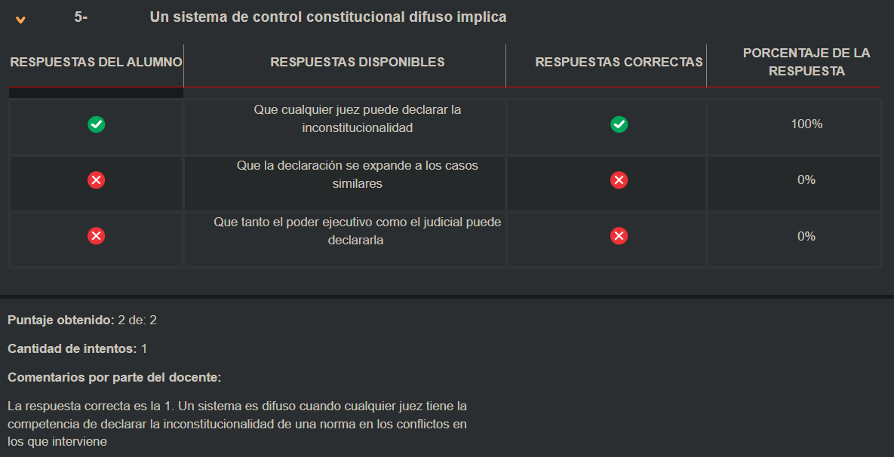
‚úÖ Que cualquier juez puede declarar la inconstitucionalidad
En el sistema de control constitucional difuso, como el que rige en Argentina a nivel federal, todos los jueces tienen la facultad de declarar la inconstitucionalidad de una norma en un caso concreto. Esto lo diferencia del sistema concentrado, donde solo un tribunal específico tiene esa atribución.
Hechos y Actos Jurídicos
En esta clase analizaremos como el derecho aprehende los fenomenos externos y les da un significado jurídíco, Veremos el concepto de acto humano voluntario tanto ilicito como lícito y dentro de estos últimos, nos detendremos en aquellos que tienen la intención de generar relaciones jurídicas
1- La intervención de un oficial público le da carácter a un instrumento cuando
- Lo realiza seg√∫n la normativa y con las formalidades previstas para tal acto
- Solo si el oficial público le otorga tal característica
- Debe ser certificado por el Estado mediante su presentación ante la autoridad competente
Respuesta
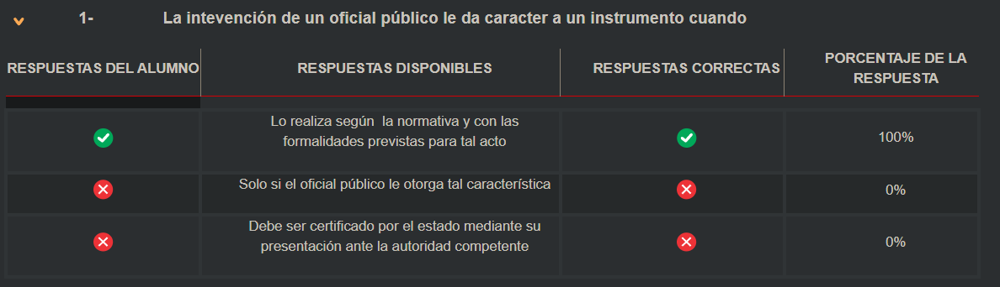
- Lo realiza seg√∫n la normativa y con las formalidades previstas para tal acto
La intervención del oficial público no es por sí sola suficiente para conferir carácter de instrumento público. Es necesario que se cumplan además las formalidades legales exigidas por el ordenamiento jurídico, tal como se establece en el desarrollo sobre los instrumentos públicos y el artículo 979 del Código Civil.
2- La fe p√∫blica otorgada al instrumento se extiende
- A todo el contenido del instrumento
- A lo percibido por el oficial p√∫blico y a las manifestaciones de las partes
- A lo percibido por el oficial p√∫blico
Respuesta
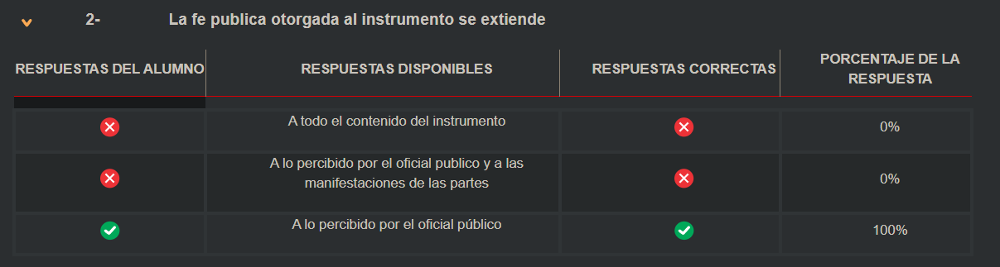
‚úÖ Respuesta correcta: A lo percibido por el oficial p√∫blico
La fe pública del instrumento no se extiende a todo su contenido, sino solo a lo que el oficial público ha visto u oído directamente. Las manifestaciones de las partes hacen fe hasta prueba en contrario, mientras que el hecho de haberlas realizado ante el oficial sí tiene fe pública. Por lo tanto, la autenticidad del instrumento se limita a los hechos cumplidos ante el oficial público, según lo establece el texto.
3- Un hecho se comete con dolo eventual en el caso que el autor
- Se represente el resultado de la acción y dirija sus acciones a su producción
- Se represente el resultado y le resulte indiferente si se produce o no
- No se presente ese resultado por negligencia o falta de cuidado
Respuesta
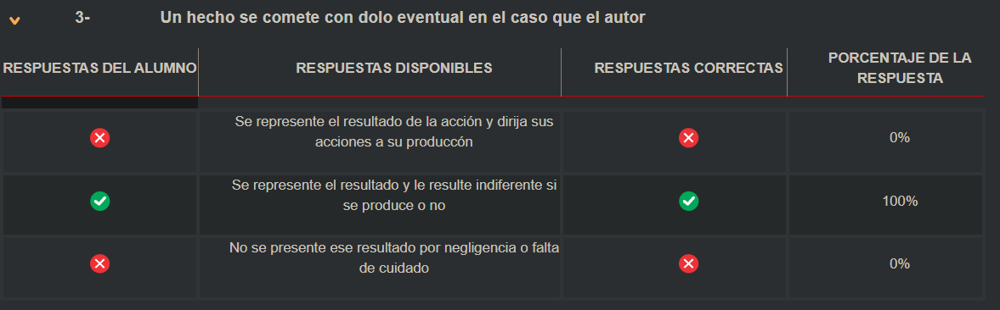
‚úÖ Respuesta correcta: Se represente el resultado y le resulte indiferente si se produce o no
Según el texto, el dolo eventual se configura cuando hay representación del resultado, pero el autor no actúa directamente para causarlo, sino que le es indiferente si ocurre o no. Se diferencia del dolo directo (donde se busca el resultado) y de la culpa (donde no se representa el resultado por negligencia o imprudencia).
4- En un acto jurídico accesorio
- La desaparición del accesorio implica la desaparición del principal
- La desaparición del principal conlleva la del accesorio
- Son independientes
Respuesta

✅ Respuesta correcta: La desaparición del principal conlleva la del accesorio
En los actos jurídicos, el accesorio depende del principal para su validez y existencia. Tal como se menciona en el texto, “la nulidad del contrato principal hace caer la garantía dada por la fianza”, es decir, si desaparece el acto principal, el accesorio también pierde efecto.
5- La violencia afecta a qué elemento de la voluntad
- La libertad
- La intención
- El discernimiento
Respuesta

‚úÖ Respuesta correcta: La libertad
Según el texto, la violencia como vicio de los actos jurídicos “se encuentra directamente relacionada con la libertad o por lo menos con su falta”, ya que impide que el autor del acto pueda decidir libremente si lo realiza o no.
Contratos Informaticos
Dentro de los actos jurídicos, los contratos permiten la creación y modificacion de relaciones personales entre las partes. En la presente unidad, veremos en primer término los contratos en general, para luego adentrarnos en la problemática de los contratos sobre sistemas de información.
1- Un contrato inform√°tico es
- Un contrato sobre sistemas de información
- Un contrato celebrado mediante una red abierta como internet
- Un contrato celebrado por un sistema experto
Respuesta
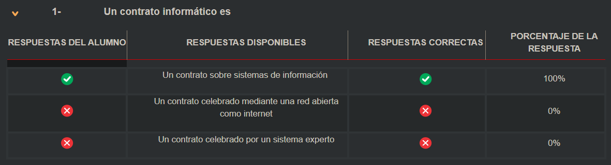
[x] Un contrato sobre sistemas de información
Justificación:
Según la definición de Mosset Iturraspe, un contrato informático es aquel mediante el cual se crean, modifican, transmiten o extinguen relaciones obligacionales sobre bienes y/o servicios informáticos. Estos bienes se integran generalmente en un sistema destinado a la gestión organizada de información.
Por lo tanto, lo que caracteriza a este tipo de contrato es su objeto: los sistemas de información y no el medio por el que se celebra (como internet) ni el uso de inteligencia artificial.
2- Un sistema inform√°tico se define por
- Las especificaciones técnicas
- Las necesidades a satisfacer
- El hardware entregado
Respuesta

[x] Las necesidades a satisfacer
En los contratos informáticos, el sistema se define como un conjunto de bienes organizados en función de un objetivo común, es decir, lo que define a un sistema informático es la función que debe cumplir según las necesidades del usuario. No basta con especificaciones técnicas o hardware entregado si no se satisface la necesidad planteada por el cliente.
Esto fue claramente sostenido en el fallo “Sisteco S.A. c/ Sujoy”, donde se concluyó que el cumplimiento de la obligación del proveedor no se mide por la entrega física de elementos, sino por la adecuación del sistema a los fines previstos.
3- La entrega del sistema se produce
- Cuando el mismo cumple con los test de funcionamiento
- Con la instalación del equipo
- Con la entrega física del material al cliente
Respuesta

[x] Cuando el mismo cumple con los test de funcionamiento
En los contratos informáticos, la entrega del sistema no se limita a la entrega física del hardware ni a su instalación, sino que se considera cumplida cuando el sistema pasa satisfactoriamente el test de aceptación.
Este test consiste en una verificación funcional previamente acordada que demuestra que el sistema cumple con los requisitos y objetivos definidos. Por lo tanto, la entrega efectiva se da cuando el sistema funciona conforme a lo pactado, incluyendo su adecuación a las necesidades del usuario.
4- La obligación de consejo abarca
- Los aspectos económicos y técnicos del proyecto
- Todos los aspectos del proyecto
- Solo los aspectos técnicos
Respuesta
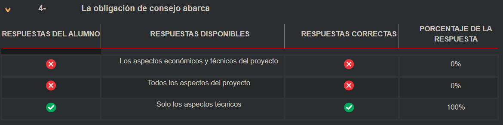
[x] Solo los aspectos técnicos
Según el marco teórico sobre contratos informáticos, la obligación de consejo del proveedor se limita a los aspectos técnicos del sistema, como la configuración, compatibilidad, escalabilidad y adecuación a las necesidades funcionales del usuario.
No abarca aspectos económicos ni decisiones empresariales, ya que estos exceden el rol técnico del proveedor y son responsabilidad del cliente o de consultores externos. Esto fue confirmado por la jurisprudencia en casos como “Cajus Face vs IBM”.
5- ¿Cuál de las siguientes sería una excepción a la obligación de consejo?
- Que el cliente sea una empresa líder en su sector
- El acuerdo de partes
- La contratación de un consultor externo por parte del cliente
Respuesta

[x] La contratación de un consultor externo por parte del cliente
Seg√∫n el contenido desarrollado sobre contratos inform√°ticos, cuando el cliente contrata a un consultor especializado para definir el pliego de condiciones, la responsabilidad de asesoramiento se traslada de forma parcial o total al consultor.
En ese caso, el proveedor ya no tiene el deber de interpretar directamente las necesidades del usuario, ya que se presume que fueron correctamente traducidas por el profesional contratado por este √∫ltimo.
Esta posición fue sostenida por la jurisprudencia francesa en el caso "Ste. Sopresur N.C.R. vs Sté Groupe Lebrun".
Contratos Parte General
1) Todo contrato tiene efectos respecto de terceros
- ( ) Verdadero
- ( ) Falso
Respuesta
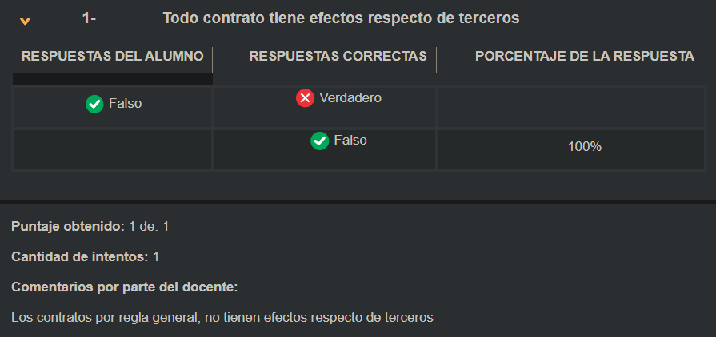
Respuesta: ( ) Falso
De acuerdo con el principio general del derecho contractual, los contratos solo producen efectos entre las partes que los celebran, no respecto de terceros. Esta regla est√° expresamente reconocida en el derecho argentino y es coherente con el principio de relatividad de los contratos.
Sin embargo, existen excepciones a este principio, como:
- Contratos con cl√°usula a favor de terceros, como los seguros de vida.
- Contratos que transfieren derechos reales, los cuales pueden ser oponibles a terceros.
Esto se encuentra desarrollado tanto en la doctrina como en la jurisprudencia y fue señalado en los materiales bajo estudio (como en el análisis sobre los sujetos en los contratos).
2) El contrato se perfecciona con la aceptación de la oferta
- ( ) Verdadero
- ( ) Falso
Respuesta
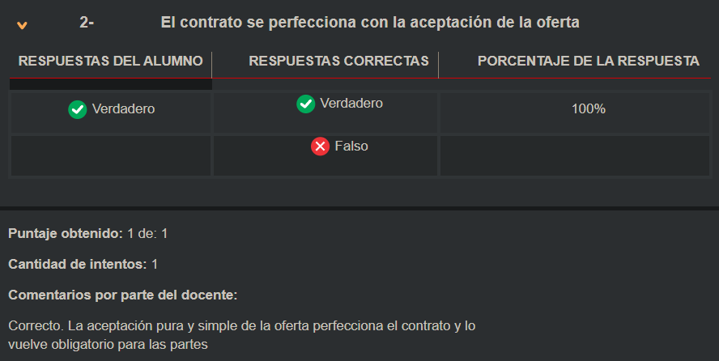
Respuesta: (‚úî) Verdadero
Según el Código Civil y Comercial argentino (art. 1148 y siguientes) y el material estudiado, el contrato se perfecciona cuando la oferta es aceptada en tiempo y forma. Es decir, cuando hay un acuerdo de voluntades entre dos o más partes sobre un objeto lícito, posible y determinado.
Este principio es esencial en la formación del contrato:
- La oferta debe contener los elementos esenciales del negocio.
- La aceptación debe ser lisa y llana, sin modificar los términos de la oferta.
- El contrato queda perfeccionado en el momento del envío de la aceptación, salvo pacto en contrario (art. 1154).
3) Un contrato es un acto jurídico
- ( ) Verdadero
- ( ) Falso
Respuesta

Respuesta: (‚úî) Verdadero
Un contrato es, efectivamente, un acto jurídico porque cumple con todas las características de este tipo de actos: es un hecho voluntario, lícito y destinado a crear, modificar o extinguir derechos y obligaciones entre las partes (art. 944 del Código Civil).
En el marco de los contratos, se trata de un acto jurídico bilateral o plurilateral, ya que requiere el acuerdo de dos o más voluntades para su existencia.
4) Solo se pueden celebrar los contratos previstos por la ley
- ( ) Verdadero
- ( ) Falso
Respuesta
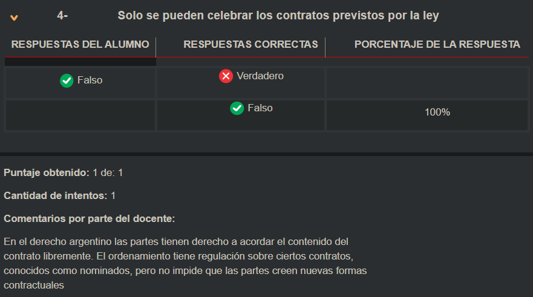
Respuesta: (‚úî) Falso
No es necesario que un contrato esté expresamente previsto por la ley para que sea válido. Existen contratos nominados (regulados por la ley) y contratos innominados, que surgen del principio de la autonomía de la voluntad.
Mientras no contravengan normas de orden público, la moral o las buenas costumbres, las partes pueden celebrar contratos atípicos o innominados, fijando libremente su contenido, según sus intereses y necesidades. Esto está reconocido tanto en la doctrina como en la jurisprudencia argentina.
5 El pacto comisorio resuelve el contrato en caso de incumplimiento
- ( ) Verdadero
- ( ) Falso
Respuesta
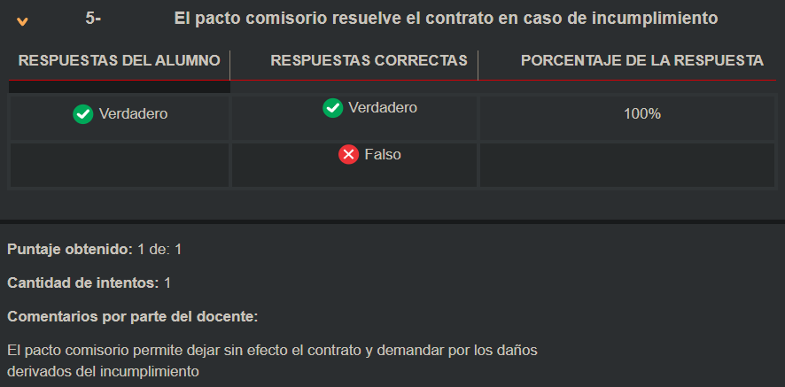
Respuesta: (‚úî) Verdadero
El pacto comisorio es una cláusula que permite resolver el contrato cuando una de las partes incumple sus obligaciones. Según el artículo 1204 del Código Civil argentino (reformado por la ley 17.711), puede ser:
- Expreso, si las partes lo pactan explícitamente (no requiere intimación).
- Tácito, si no se pactó expresamente, pero se aplica de todos modos, con la obligación de intimar al cumplimiento en un plazo mínimo de 15 días.
Una vez resuelto, el contrato se considera extinguido con efectos retroactivos, y puede dar lugar al reclamo de daños y perjuicios.
6) El contrato se perfecciona con la firma de las partes
- ( ) Verdadero
- ( ) Falso
Respuesta

Respuesta: (‚úò) Falso
El contrato se perfecciona con el acuerdo de voluntades, es decir, cuando hay aceptación de la oferta (art. 1154 del Código Civil). La firma no es un requisito esencial para todos los contratos; es solo una forma de exteriorizar ese consentimiento, especialmente en contratos escritos.
En muchos casos, el contrato es v√°lido aunque no haya sido firmado, siempre que haya consentimiento entre las partes y no se requiera una forma solemne para su validez.
7) Un contrato unilateral tiene una sola parte
- ( ) Verdadero
- ( ) Falso
Respuesta
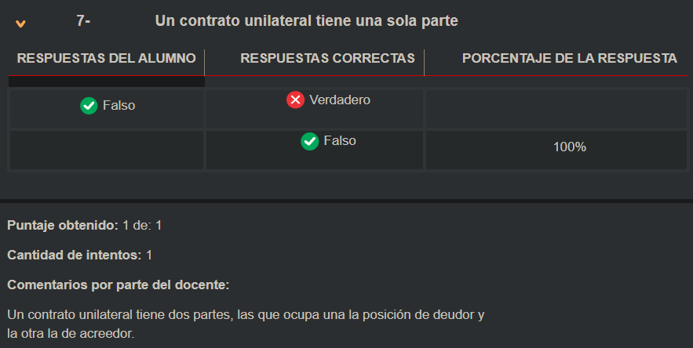
Respuesta: (‚úò) Falso
Un contrato unilateral no implica que haya una sola parte, sino que solo una de las partes asume obligaciones. Siempre se requiere al menos dos partes para que exista un contrato (art. 1137 del Código Civil), pero en el contrato unilateral, solo una queda obligada. Ejemplo: una donación, donde el donante se obliga a entregar y el donatario no asume obligación alguna.
8) Un contrato de adhesión es una convención con cláusulas predispuestas
- ( ) Verdadero
- ( ) Falso
Respuesta

Respuesta: (‚úî) Verdadero
Un contrato de adhesión es aquel en el que las cláusulas están predispuestas por una de las partes (generalmente la más fuerte económicamente) y la otra parte solo puede aceptarlas o rechazarlas, sin posibilidad real de negociación. Este tipo de contratos es típico en servicios masivos como seguros, banca o telefonía.
9) Una aceptación que modifique la oferta implica una contraoferta
- ( ) Verdadero
- ( ) Falso
Respuesta

Respuesta: (‚úî) Verdadero
Según el Código Civil argentino (art. 1154), para que el contrato se perfeccione, la aceptación debe ser lisa y llana, es decir, no debe introducir modificaciones a la oferta. Si la aceptación altera alguno de sus términos, no constituye una aceptación propiamente dicha, sino que implica una nueva oferta o contraoferta, que deberá ser aceptada por quien realizó la oferta original.
10) El objeto de un contrato debe ser posible
- ( ) Verdadero
- ( ) Falso
Respuesta
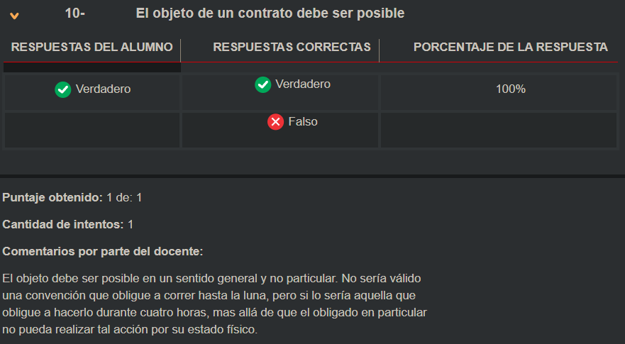
Respuesta: (‚úî) Verdadero
Según el artículo 953 del Código Civil argentino, el objeto de los actos jurídicos —y por lo tanto, de los contratos— debe ser posible, lícito, y conforme a la moral y las buenas costumbres. Un objeto imposible (como obligarse a realizar una acción físicamente irrealizable) torna el contrato nulo, ya que no puede cumplirse válidamente.
Propiedad intelectual
En esta clase veremos como el derecho recepta el trabajo intelectual y cuales son las formas de reinvidicar como propios los contenidos (software, marcas, etc) generados por el profesional inform√°tico
1) El dominio público implica que los derechos de explotación económica terminan
- ( ) Verdadero
- ( ) Falso
Respuesta

‚úÖ Respuesta: Verdadero
Según el texto, una vez vencido el plazo de protección (70 años desde la muerte del autor), la obra entra en dominio público, lo cual significa que los derechos patrimoniales (económicos) del autor quedan sin efecto, y su utilización pasa a ser libre para todos sin necesidad de autorización ni pago .
2) El software se protege mediante la ley de patentes de invención
- ( ) Verdadero
- ( ) Falso
Respuesta

‚ùå Respuesta: Falso
El software no se protege mediante la Ley de Patentes de Invención (Ley 24.481), sino que está expresamente incluido en la Ley 11.723 de Propiedad Intelectual como una obra literaria. Esta protección fue incorporada luego del fallo “Pellicori” y tiene respaldo en tratados internacionales como el acuerdo TRIPS.
3) Las marcas comerciales deben ser utilizadas en todas las categorías donde se anotan
- ( ) Verdadero
- ( ) Falso
Respuesta

‚úÖ Respuesta: Falso
La ley no exige que las marcas se utilicen en todas las categorías donde se anotan. Basta con que se utilicen en al menos una de las categorías inscriptas para que puedan ser renovadas. Las marcas inscritas en categorías donde no se pretende usarlas se conocen como marcas de defensa, y su objetivo es evitar la dilución de la marca por uso de terceros en rubros distintos.
4) Toda obra registrada debe tener un mínimo de originalidad
- ( ) Verdadero
- ( ) Falso
Respuesta

‚úÖ Respuesta: Verdadero
La ley exige que para que una obra sea protegida por derechos de autor, debe poseer un mínimo grado de originalidad. No se requiere una originalidad absoluta, pero sí debe haber un aporte personal del autor que diferencie la obra de otras preexistentes. Esto es esencial para que la obra pueda considerarse una creación protegible.
5) La protección ofrecida por la ley de derechos de autor es tecnológicamente neutra
- ( ) Verdadero
- ( ) Falso
Respuesta

‚úÖ Respuesta: Verdadero
La ley 11.723 de propiedad intelectual, especialmente tras su reforma, establece una protección amplia y no taxativa que permite incluir nuevas formas de expresión como el software. Su redacción, en especial en el artículo 1, fue diseñada para abarcar toda producción científica, literaria o artística sin importar el medio o tecnología utilizada, lo que confirma su neutralidad tecnológica.
Primer Parcial Aspectos Legales
1) Que un sistema de control constitucional sea difuso significa
- Que un cualquier juez puede decretar la inconstitucionalidad
- Que los efectos de la declaración se extienden a casos similares
- Que el planteo se puede producir en cualquier momento del proceso
Respuesta
[x] Que un cualquier juez puede decretar la inconstitucionalidad
Un sistema de control constitucional difuso implica que todos los jueces del país tienen la facultad de declarar la inconstitucionalidad de una norma en el caso concreto que estén resolviendo, a diferencia de un sistema concentrado, donde esa facultad está reservada a un tribunal específico (como una Corte Constitucional). ¿Querés que continúe con la siguiente pregunta?
2) La propiedad intelectual de un software se regula
- Por la ley de derechos de autor
- Por la ley de patentes de invención
- Por una ley especial creada a tal fin
Respuesta
[x] Por la ley de derechos de autor
Según la Ley 11.723 de Propiedad Intelectual (modificada), el software está protegido como una obra literaria dentro del régimen de derechos de autor, y no por la ley de patentes ni por una ley especial creada a tal fin. ¿Seguimos con la siguiente?
3) Un sistema de información es una universalidad de bienes definida por
- Los bienes ofrecidos
- Las necesidades a satisfacer
- El contenido del contrato
Respuesta
[x] Las necesidades a satisfacer
Un sistema de información se define como una universalidad de bienes cuya configuración depende de los objetivos y necesidades que debe satisfacer el usuario, no simplemente por los bienes ofrecidos ni por lo que se establezca en el contrato .
4) Por principio general, los contratos tienen el siguiente efecto respecto de los terceros
- Son obligatorios, salvo pacto en contrario
- Son obligatorios en los casos que se realizaron por instrumento p√∫blico
- No le son oponibles
Respuesta
[x] No le son oponibles
Por principio general, los contratos sólo producen efectos entre las partes que los celebran. Es decir, no son oponibles a terceros, salvo en casos excepcionales previstos por la ley.
5) La fe p√∫blica de un documento se extiende
- A todo el contenido del documento
- A lo manifestado por las partes
- A lo percibido por el oficial p√∫blico
Respuesta
[x] A lo percibido por el oficial p√∫blico
La fe p√∫blica se extiende solo a lo que el oficial p√∫blico ha percibido por sus sentidos o ha constatado personalmente, no a lo manifestado por las partes, ya que esas manifestaciones pueden ser falsas o inexactas y no est√°n bajo control directo del oficial.
6) La obligación de consejo se extiende a qué aspectos del proceso
- Los técnicos
- Los técnicos y financieros
- Todos los aspectos del proyecto
Respuesta
[x] Los técnicos
La obligación de consejo del proveedor en contratos informáticos se limita a los aspectos técnicos, relacionados con la funcionalidad, compatibilidad y adecuación del sistema a las necesidades del usuario. No abarca aspectos financieros o empresariales.
7) ¿Cuál de las siguientes características NO pertenece a las obligaciones personales?
- Se establecen entre dos personas
- Implican un hacer, un dar o un omitir
- Se crean solo por ley
Respuesta
[x] Se crean solo por ley
Las obligaciones personales pueden originarse por ley, contrato, cuasicontrato, delito o cuasidelito, pero no se crean exclusivamente por ley, por lo que esta opción no pertenece a sus características.
8) Si una persona actúa con indiferencia respecto a la posibilidad de la producción de un resultado, estamos frente a un caso de
- Dolo Eventual
- Dolo Directo
- Culpa con representación
Respuesta
[x] Dolo Eventual
El dolo eventual ocurre cuando una persona se representa la posibilidad del resultado dañoso y, aun así, actúa con indiferencia respecto a su producción. Es decir, no busca directamente el daño, pero lo acepta como posible consecuencia de su conducta.
9) Un contrato ser√° bilateral cuando
- Las partes ocupen en forma simultánea la posición de deudor y acreedor
- Las obligaciones se puedan expresar en dinero
- Su celebración implica la participación de dos o más partes
Respuesta
[x] Las partes ocupen en forma simultánea la posición de deudor y acreedor
Un contrato bilateral es aquel en el que ambas partes asumen obligaciones recíprocas, es decir, cada una es acreedora y deudora al mismo tiempo. Por ejemplo, en una compraventa, el vendedor debe entregar la cosa y el comprador pagar el precio.
10) Si un sistema de voto electrónico no permite acceder al código fuente ¿cuál de los requisitos estudiados se vería afectado directamente?
- La universalidad
- La seguridad
- La transparencia
Respuesta
[x] La transparencia
Si no se puede acceder al código fuente de un sistema de voto electrónico, no se puede verificar cómo funciona internamente, lo que afecta directamente la transparencia del proceso electoral. La transparencia exige que tanto los ciudadanos como los especialistas puedan auditar el sistema para garantizar que funcione correctamente y sin manipulaciones.
Recuperatorio
1) Un elemento definitorio de los derechos reales es
- La relación directa entre la cosa y el titular
- Se crean solo por ley
- Son oponibles a todos los sujetos
- Todo lo anterior
Respuesta
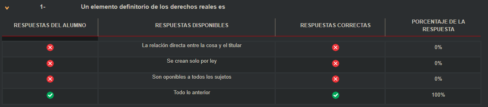
[x] Todo lo anterior
Los derechos reales se caracterizan por:
- La relación directa entre el titular y la cosa (ej. dominio, usufructo).
- Se crean solo por ley, no por la voluntad de las partes.
- Son oponibles a todos los sujetos (eficacia "erga omnes").
2) La fuerza física irresistible es un vicio de
- La libertad
- La intención
- El discernimiento
Respuesta
[x] La libertad
Justificación:
La fuerza física irresistible anula la libertad del sujeto para actuar, ya que lo obliga a ejecutar una acción contra su voluntad. Por eso, se considera un vicio de la libertad, no de la intención ni del discernimiento.
3) Los requisitos de un instrumento p√∫blico son
- La firma y la fecha cierta
- La firma y el doble ejemplar
- La fecha cierta y el doble ejemplar
Respuesta

[x] La firma y la fecha cierta
Un instrumento p√∫blico debe reunir determinados requisitos formales para ser v√°lido, y los esenciales son:
- La firma del funcionario autorizado.
- La fecha cierta, que le otorga autenticidad y fuerza probatoria frente a terceros.
4) El software se protege por la ley
- De derechos de autor
- De patentes y diseños industriales
- De promoción de la sociedad del conocimiento
Respuesta

[x] De derechos de autor
Según la legislación argentina (Ley 11.723), el software está protegido como una obra intelectual bajo el régimen de derechos de autor, y no por el sistema de patentes o diseños industriales. Esta protección fue incorporada expresamente tras el fallo "Autodesk".
5) ¬øCu√°les son los requisitos comunes a todos los sistemas de sufragio seg√∫n los pactos internacionales?
- La universalidad, la igualdad y la transparencia
- La Universalidad, La Igualdad y La Seguridad
- La Universalidad, La Igualdad y el Secreto
Respuesta

[x] La Universalidad, La Igualdad y el Secreto
Los pactos internacionales de derechos humanos, como el Pacto Internacional de Derechos Civiles y Políticos (art. 25), establecen que todo ciudadano debe gozar del derecho al voto mediante un sistema universal, igualitario y mediante voto secreto, garantizando la libre expresión de la voluntad del elector.
6) La obligación de consejo se extiende a qué aspectos del proyecto
- A todos los aspectos del proyecto
- Solo a los aspectos técnicos
- A los aspectos técnicos y el posible beneficio económico del proyecto
Respuesta
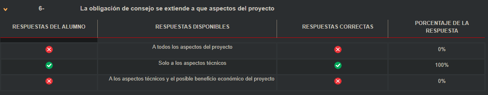
[x] Solo a los aspectos técnicos
Según el análisis doctrinario y jurisprudencial, la obligación de consejo en los contratos informáticos recae exclusivamente sobre los aspectos técnicos del sistema contratado. No se extiende a evaluaciones económicas ni decisiones empresariales, ya que esas competencias corresponden al usuario o a sus asesores. Así lo reflejan tanto la jurisprudencia argentina (como en Sistex c/Oliva) como la francesa (como en Cajus Face vs IBM).
7) Un contrato unilateral tiene
- Una parte
- Por lo menos dos partes
- Dos partes contratantes y un tercero que es el beneficiario de la prestación acordada
Respuesta

[x] Por lo menos dos partes
Un contrato unilateral tiene al menos dos partes, ya que todo contrato requiere el acuerdo entre dos o más personas. Lo que lo distingue es que solo una de las partes asume obligaciones, mientras la otra no tiene carga alguna. No debe confundirse con que haya una sola parte firmante o interviniente: siempre hay dos partes, aunque una no esté obligada.
8) El contrato comienza a existir con
- La entrega del doble ejemplar
- La firma
- La aceptación de la oferta
Respuesta
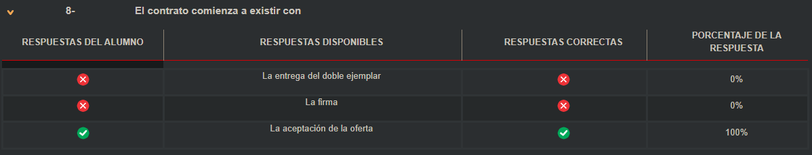
[x] La aceptación de la oferta
Según el régimen general de los contratos, el contrato se perfecciona cuando la oferta es aceptada en tiempo y forma. La firma puede ser una forma de expresar esa aceptación, pero lo que da nacimiento al contrato como vínculo jurídico es el acuerdo de voluntades, es decir, la aceptación de la oferta.
9) Un contrato innominado es un contrato
- Que está prohibido por la legislación vigente
- Que no está previsto en la legislación vigente
- Que tiene regulación supletoria en la legislación vigente
Respuesta
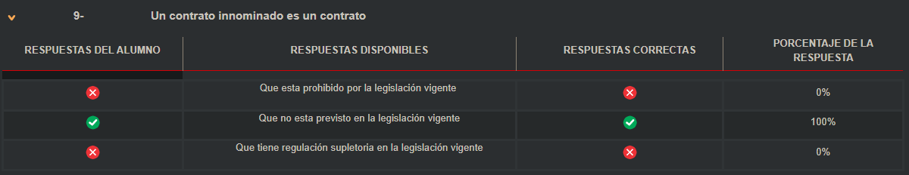
[x] Que no está previsto en la legislación vigente
Un contrato innominado es aquel que no tiene una regulación específica en la ley, a diferencia de los contratos nominados, que sí están tipificados (como compraventa, locación, etc.). Sin embargo, los contratos innominados son válidos si respetan los principios generales del derecho contractual, y su contenido se rige por la voluntad de las partes y por normas supletorias en caso de omisiones.
10) Seg√∫n el moderno concepto de entrega, ¬øcu√°ndo se cumple con la entrega de un sistema inform√°tico?
- Con la finalización de las pruebas de funcionamiento
- Con la puesta en funcionamiento
- Con la entrega física de los componentes
Respuesta
[x] Con la finalización de las pruebas de funcionamiento
Según el moderno concepto de entrega en los contratos informáticos, no basta con la entrega física ni con la instalación del sistema. La entrega se considera cumplida cuando el sistema supera el test de aceptación, es decir, cuando se verifica que funciona conforme a lo pactado y satisface las necesidades del usuario.
Autoevaluacion - Parcial de prueba
1) Un sistema de control constitucional difuso implica
- Que cualquier juez puede declarar la inconstitucionalidad
- Que la declaración se expande a los casos similares
- Que tanto el poder ejecutivo como el judicial puede declararla
Respuesta

[x] Que cualquier juez puede declarar la inconstitucionalidad
En un sistema de control constitucional difuso, como el que rige en Argentina, cualquier juez tiene la facultad de declarar la inconstitucionalidad de una norma al resolver un caso concreto. Este control se da en el marco de un juicio y sus efectos se limitan a las partes (control "inter partes").
2) La existencia del federalismo se relaciona
- Con la preexistencia de los gobiernos locales, que retienen para sí las competencias no expresamente delegadas
- La mayor descentralización de las facultades del estado en beneficio de los gobiernos locales
- La existencia de provincias en un territorio
Respuesta
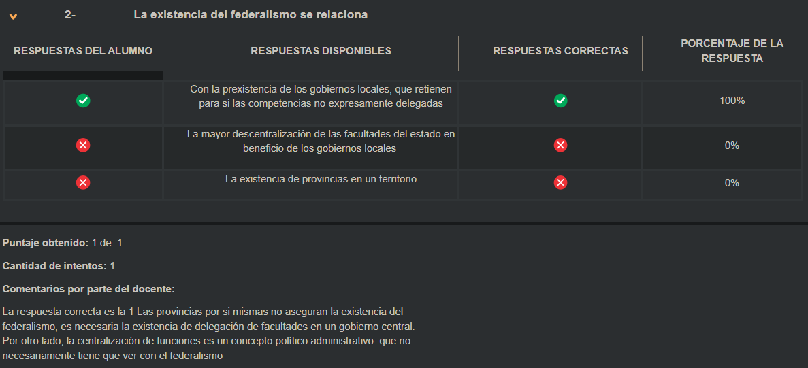
[x] Con la preexistencia de los gobiernos locales, que retienen para sí las competencias no expresamente delegadas
El federalismo implica la existencia de gobiernos locales preexistentes (como las provincias en Argentina) que conservan autonomía y retienen las competencias no delegadas expresamente al gobierno nacional. Es un principio constitucional clave en sistemas federales.
3) La monarquía es una forma
- De nación
- De estado
- De gobierno
Respuesta
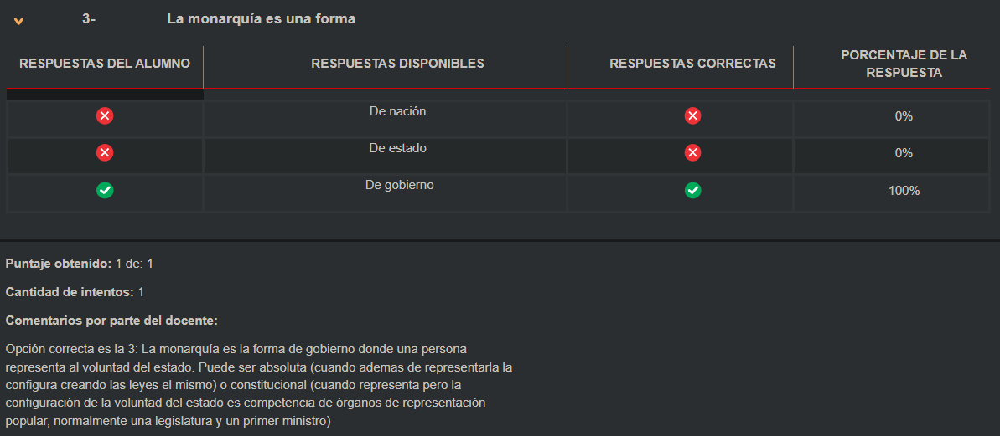
[x] De gobierno
La monarquía es una forma de gobierno, ya que se refiere a cómo se organiza el poder en un Estado. Se contrapone a otras formas como la república. En cambio, "forma de Estado" alude a la organización territorial del poder (unitario, federal), y "forma de nación" no es una categoría jurídica.
4) La entrega del sistema se produce
- Cuando el mismo cumple con los test de funcionamiento
- Con la instalación del equipo
- Con la entrega física del material al cliente
Respuesta

[x] Cuando el mismo cumple con los test de funcionamiento
Seg√∫n el enfoque moderno sobre la entrega de sistemas inform√°ticos, la entrega no se considera completada hasta que el sistema haya superado exitosamente las pruebas de funcionamiento. Esto garantiza que el producto cumple con las especificaciones pactadas y es apto para su uso previsto.
5) ¿Cuál de las siguientes sería una excepción a la obligación de consejo?
- Que el cliente sea una empresa líder en su sector
- El acuerdo de partes
- La contratación de un consultor externo por parte del cliente
Respuesta
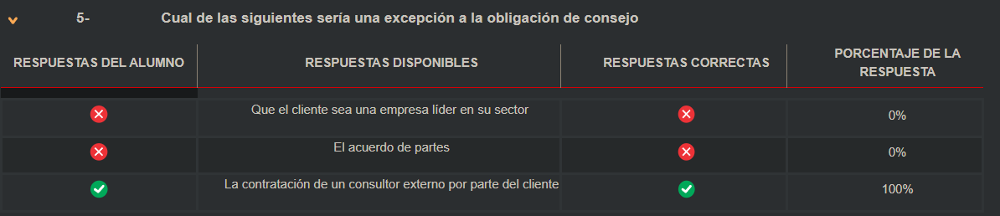
[x] La contratación de un consultor externo por parte del cliente
Cuando el cliente contrata a un consultor especializado, se entiende que ya cuenta con el conocimiento técnico necesario para evaluar el sistema. Esto disminuye o elimina la disparidad informativa entre las partes, lo que a su vez exime al proveedor de su obligación de consejo, tal como ha sido reconocido por la jurisprudencia francesa y nacional.
6) En un acto jurídico accesorio
- La desaparición del accesorio implica la desaparición del principal
- La desaparición del principal conlleva la del accesorio
- Son independientes
Respuesta

[x] La desaparición del principal conlleva la del accesorio
Un acto jurídico accesorio está subordinado al principal y carece de autonomía propia. Si el acto principal desaparece o se extingue, el accesorio pierde su razón de ser y también se extingue. Un ejemplo clásico es la fianza, que depende de un contrato principal como el de alquiler.
7) La fe p√∫blica otorgada al instrumento se extiende
- A todo el contenido del instrumento
- A lo percibido por el oficial p√∫blico y a las manifestaciones de las partes
- A lo percibido por el oficial p√∫blico
Respuesta

[x] A lo percibido por el oficial p√∫blico
La fe pública que otorga un instrumento público se limita a lo que el oficial público percibe por sí mismo en el acto (por ejemplo, la presencia de las partes, sus firmas, fecha y lugar), pero no abarca las manifestaciones o declaraciones internas de las partes si no fueron directamente percibidas por él.
8) Un contrato unilateral tiene
- Una parte
- Por lo menos dos partes
- Dos partes contratantes y un tercero que es el beneficiario de la prestación acordada
Respuesta
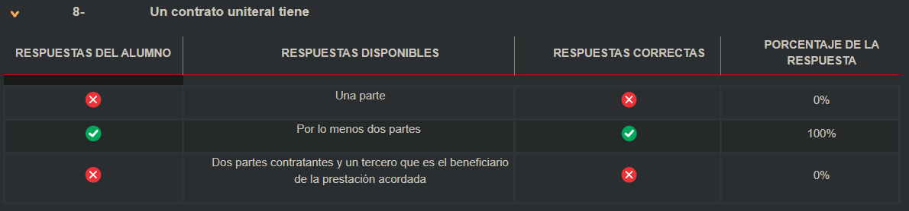
[x] Por lo menos dos partes
Un contrato unilateral requiere al menos dos partes para su celebración, ya que todo contrato implica un acuerdo entre partes. Lo que lo caracteriza como "unilateral" es que solo una de ellas asume obligaciones, mientras la otra no contrae ninguna.
9) La fuerza física irresistible es un vicio de
- La libertad
- La intención
- El discernimiento
Respuesta

[x] La libertad
La fuerza física irresistible afecta la libertad, ya que impide que la persona actúe de manera voluntaria. Si alguien es forzado físicamente a realizar un acto, no está ejerciendo libremente su voluntad, lo que vicia el consentimiento.
10) La propiedad intelectual de un software se regula
- Por la ley de derechos de autor
- Por la ley de patentes de invención
- Por una ley especial creada a tal fin
Respuesta
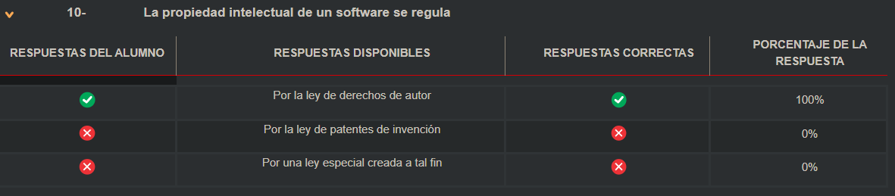
[x] Por la ley de derechos de autor
En Argentina, el software se encuentra protegido bajo la Ley 11.723 de Propiedad Intelectual, que fue modificada para incluir expresamente a los programas de computación fuente y objeto. Esta protección abarca tanto los derechos patrimoniales como los derechos morales del autor.
Autoevaluacion - Parcial de prueba 2
1) La monarquía es una forma
- De nación
- De estado
- De gobierno
Respuesta

2) La existencia del federalismo se relaciona
- Con la preexistencia de los gobiernos locales, que retienen para sí las competencias no expresamente delegadas
- La mayor descentralización de las facultades del estado en beneficio de los gobiernos locales
- La existencia de provincias en un territorio
Respuesta
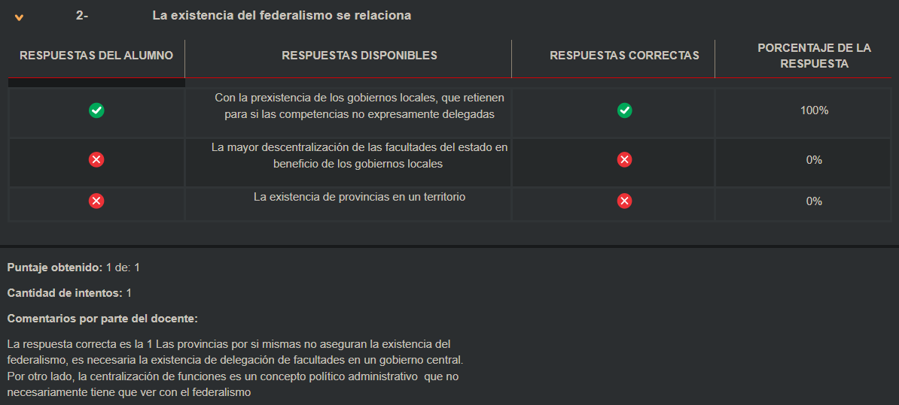
3) Un contrato unilateral tiene
- Una parte
- Por lo menos dos partes
- Dos partes contratantes y un tercero que es el beneficiario de la prestación acordada
Respuesta

4) La fuerza física irresistible es un vicio de
- La libertad
- La intención
- El discernimiento
Respuesta
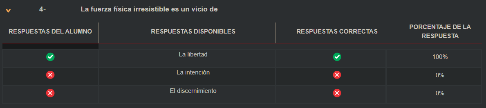
5) Un sistema inform√°tico se define por
- Las especificaciones técnicas
- Las necesidades a satisfacer
- El hardware entregado
Respuesta
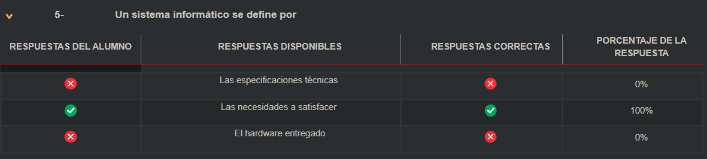
6) Seg√∫n el moderno concepto de entrega, ¬øcu√°ndo se cumple con la entrega de un sistema inform√°tico?
- Con la finalización de las pruebas de funcionamiento
- Con la puesta en funcionamiento
- Con la entrega física de los componentes
Respuesta
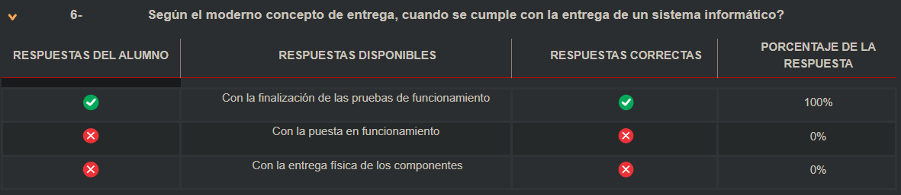
7) El contrato comienza a existir con
- La entrega del doble ejemplar
- La firma
- La aceptación de la oferta
Respuesta
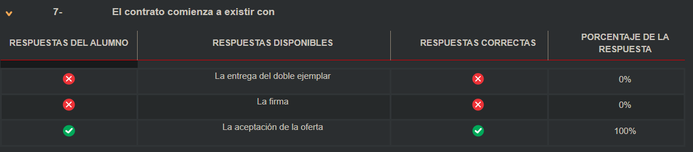
8) ¿Cuál de las siguientes características NO pertenece a las obligaciones personales?
- Se establecen entre dos personas
- Implican un hacer, un dar o un omitir
- Se crean solo por ley
Respuesta

9) Que un sistema de control constitucional sea difuso significa
- Que un cualquier juez puede decretar la inconstitucionalidad
- Que los efectos de la declaración se extienden a casos similares
- Que el planteo se puede producir en cualquier momento del proceso
Respuesta

10) Aparte del pre√°mbulo el texto constitucional se divide en:
- Dos partes: Declaraciones derechos y garantías y autoridades de la nación
- Tres partes: Declaraciones derechos y garantías, autoridades de la nación y gobiernos provinciales
- Cuatro partes: Declaraciones derechos y garantías y tres correspondiendo a cada poder del estado
Respuesta
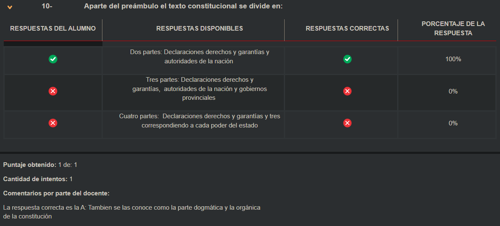